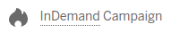

Get the tech that gets people talking
With both live crowdfunding campaigns and innovative products shipping now, there’s no better place to start the hunt for cool and clever innovations that surprise and delight. Indiegogo is where new launches.
With both live crowdfunding campaigns and innovative products shipping now, there’s no better place to start the hunt for cool and clever innovations that surprise and delight. Indiegogo is where new launches.
Indiegogo's crowdfunding campaigns are where new and groundbreaking products take flight, sometimes long before they hit mainstream availability. With thousands of campaigns launching every week, there's great tech, design, and much more around every corner — often with limited-time perks and pricing for the earliest backers. Before it's everywhere, it's on Indiegogo.

Or learn more about crowdfunding and your role as a backer.

Many campaigns offer perks to say thanks to backers, in exchange for different contribution amounts. Perks can be objects, acknowledgement, a thank you, services, events or anything that does not violate our Terms of Use.
Perks are listed on the right side of the Campaign page, under the "Back It" button. If you do not see any perks listed, the campaign owner may have decided not to offer any perks.
helpful links
When will I receive my perk? Does Indiegogo Guarantee perks? Guaranteed Delivery Perk Policy The Trust-Proven Program
7,957 Backers
With super-smart fitness technology squeezed into a sleek, take-it-anywhere design, the Misfit Shine was a huge hit. Today it’s available in stores everywhere, but Indiegogo backers were in on the action first.

10,984 Backers
This smash-hit campaign almost singlehandedly invented the smart suitcase as the must-have travel accessory that it is today. With innovative features like location tracking and a built-in scale, Bluesmart went big on Indiegogo before landing in stores around the world.

6,616 Backers
The Evapolar team’s slick air conditioner is small enough to place exactly where you need it most. It even cleans and humidifies as it cools. The campaign was so successful that the team came back to Indiegogo to launch the next-gen version.

54,531 Backers
With its truly gigantic backer community, Super Troopers 2 became one of the most iconic Indiegogo film projects. The team behind the project offered backers everything from movie tickets to an actual police car from the film!